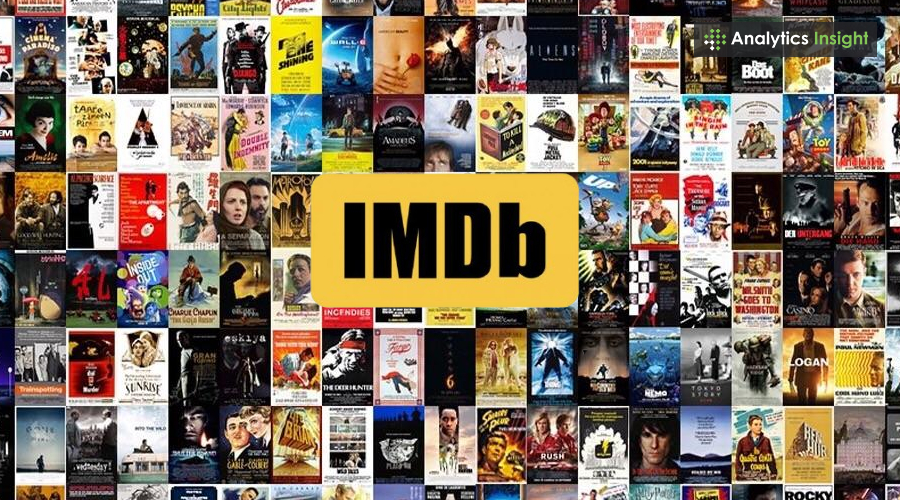
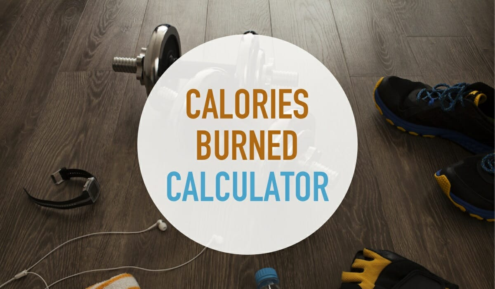
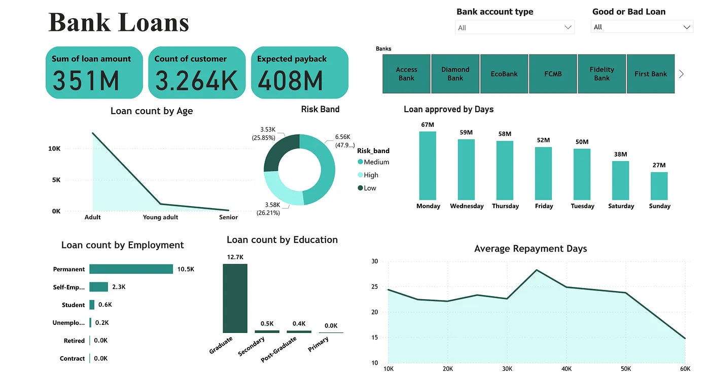
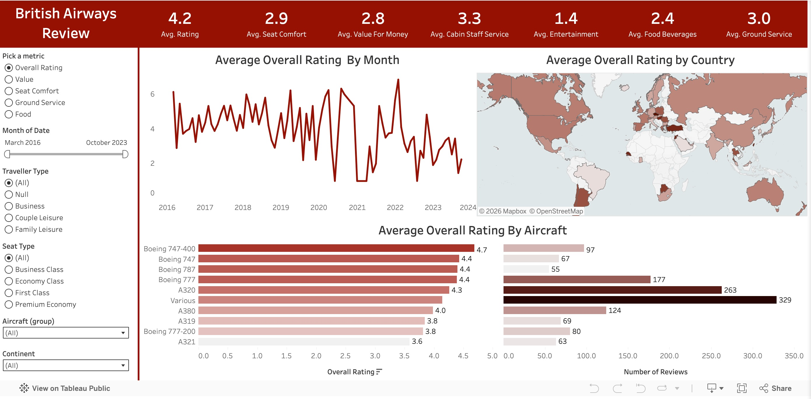
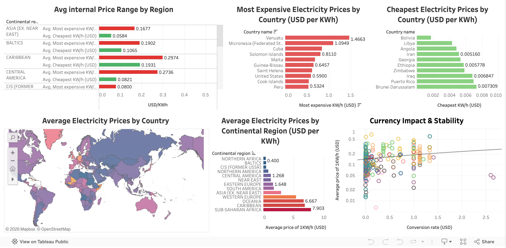

As a B.Eng graduate from Covenant University, I discovered my passion for data while in school. The excitement of transforming raw numbers into actionable insights drove me. Since then, I honed skills that make data manipulation, visualization, machine learning, and exploration effortless:
- Tools: Python, SQL, Excel.
- Visualization: Power BI, Tableau, Excel.
- Mindset: Curiosity-driven problem-solving with an engineer's precision.
Below, you'll find projects where I've brought data to life. Let's build something meaningful together!
📄 View My CV
Portfolio
Excel
Department Store Analytics
Department Store Analytics analyzes a shipping store dataset for a retailer of clothes, shoes, and accessories.
It tracks total item costs, spending by location, color preferences, customer count, store expenditure, average age, item counts, and category spending, driving insights for inventory and marketing.
Adventure Works Sales
Adventure Works Sales Analysis reviews sales data for a retailer.
It tracks quantity, cost, revenue, profit, and transactions.
It analyzes revenue by year, profit by month and weekday, and quarterly results.
It evaluates top products, customers, and colors.
It assesses pricing, gender, age, and regions.
Use data to focus products and target regions.
Python
Loan Predictor
Loan Predictor is a comprehensive project that analyzes bank loan data, engineers predictive features, and deploys a Streamlit app and Power BI dashboard.
It uses machine learning models to forecast good or bad loan outcomes, offering actionable insights for financial decision-making.

IMDb Top Movies Scraper
This project collects data on top 250 movies from IMDb.
It tracks titles, ratings, votes, years, durations, certifications, and descriptions.
It uses requests and BeautifulSoup to fetch and parse data.
It gathers 25 entries. You organize data into a pandas DataFrame.
Export it as a CSV file. Analyze rankings with this data.

World Health Organization: Health Information Scraper
I gather health data from the WHO website.
I track names, links, overviews, impacts, and responses.
I use requests and BeautifulSoup to fetch and parse content.
I organize data into a pandas DataFrame.
Export it as a CSV file. Use data to review health priorities.

Calories Burned Predictor
I start with Python basics: arithmetic, variables, printing, data types.
I use if-else, loops, functions. I import pandas, numpy, seaborn, matplotlib.
I load calories.csv and exercise.csv, merge on User_ID.
I explore data, perform EDA with distributions, boxplots, correlations.
I encode Gender, engineer BMI, remove outliers.
I transform Calories, split data, train models: Linear Regression, Random Forest, XGBoost.
I evaluate, tune XGBoost, build a pipeline, save as calorie_predictor.pkl.
I predict on new data with BMI. Use to estimate calories burned.
SQL
Global Tech Layoffs 2020–2025: Complete Cleaning & Analysis Pipeline
I load the 2020–2025 global tech layoffs dataset (2,500+ records).
I remove duplicates, standardize company names, unify crypto industries, fix country names, convert dates to proper DATE type, fill missing industries via self-join, and drop rows without layoff data.
I run full EDA: max layoffs (Intel 22,000), 100% shutdowns ranked by funds raised, totals by company/industry/country/year/stage, monthly rolling sums, and top-5 companies per year using DENSE_RANK.
I deliver a polished, analysis-ready dataset.
Sales & Customer Insights 2020–2023: Full Cleaning & EDA Pipeline
I load the 2020–2023 sales and customer insights dataset (10,000 records).
I create a staging table, confirm zero duplicates, verify all categorical values, check for nulls/blanks (none), and lock in clean structure.
I ran a full EDA: highest purchase frequency (19), top AOV ($199.96), max lifetime value ($9,999.76 in Electronics), churn range (0.0–1.0), etc.
I produce a fully cleaned, ready-to-use customer insights table.
Top Richest 2024: Full Cleaning & EDA Pipeline
I load the 2024 top richest people dataset (500 records).
I create staging tables, confirm zero duplicates, verify distinct industries/countries, check for nulls/blanks (none), and finalize clean columns.
I run full EDA: top industry (Technology 138), leading country (United States 267), max YTD gain (Elon Musk +$218B), highest positive last change (Larry Page +$7.85B), worst last change (Amancio Ortega -$7.41B), and sorted lists of non-zero changes by name/country/industry.
I produce a fully cleaned, ready-to-use richest people table.
Visualization Tools

Power BI Loan Dashboard
Bank Loan Dashboard analyzes loan data for prediction.
It tracks loan amount, customer count, and expected payback.
It examines loan count by age, risk bands, approvals by day, and counts by employment and education.
It assesses repayment days.
Use data to target adults, permanent employees, and key days.

British Airways Review Dashboard
Using Tableau, I created a British Airways Review Dashboard to analyze passenger feedback for service improvement.
It tracks overall ratings across metrics like seat comfort, value, and staff service while examining performance trends by month and country.
It assesses aircraft satisfaction, showing higher ratings for the Boeing 747-400 compared to the A321. Use this data to address low entertainment scores
and optimize service across different traveler types and seat classes.

Word Electricity Price
Using Tableau, I created a Global Electricity Price Dashboard to analyze energy costs and currency impacts for economic prediction.
It tracks average prices, continental price ranges, and currency stability. It examines the most expensive countries like Vanuatu, the cheapest like Bolivia,
and average costs by continental region. It assesses the relationship between conversion rates and price per KWh.
Use data to target high-cost regions like Sub-Saharan Africa and identify markets with extreme price volatility.
More Projects Coming